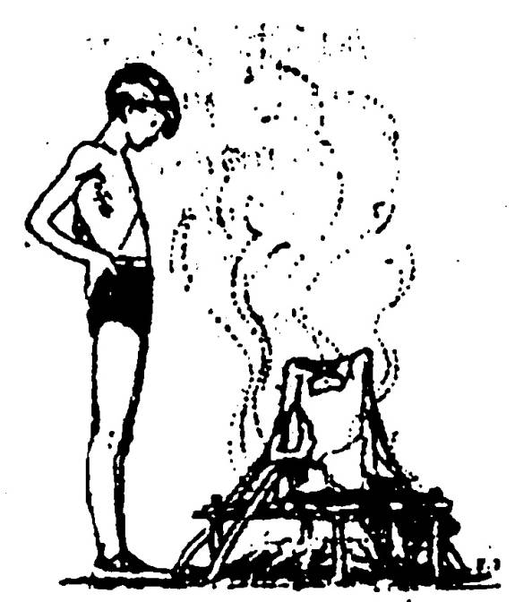

Như chúng tôi đã trình bày ở những phần trước, trong vùng hoang vu vắng vẻ, nhất là khi chỉ có một mình, nếu bị thương tích hay bệnh hoạn, thì tình cảnh của các bạn thật là thê thảm. Nó sẽ lấy đi của các bạn niềm tin và nghị lực, các bạn sẽ cảm thấy cô đơn, nhỏ bé giữa thiên nhiên bao la, hung hiểm,… Và khi các bạn không còn nghị lực phấn đấu để sinh tồn thì thiên nhiên hoang dã sẽ nuốt chửng bạn. Cho nên các bạn phải làm sao cố gắng hết sức để gìn giữ và bảo vệ sức khỏe.
Các bạn cũng cần phải có một số kiến thức nhất định về một số cây cỏ, động vật, côn trùng dùng để đề phòng và chữa bệnh. Biết giữ gìn vệ sinh cơ thể cũng như vệ sinh khu vực trú ẩn. Biết đề phòng cũng như chữa trị một số bệnh thông thường, nhất là những căn bệnh thường gặp ở những nơi núi rừng hoang vu như: sốt rét, tả, lỵ,… Biết sơ cứu một số trường hợp khẩn cấp.
ĐỀ PHÒNG
1. GIỮ GÌN VỆ SINH
Thân thể:
- Tắm rửa hàng ngày nếu có thể được.
- Vệ sinh răng miệng. (nếu không có bàn chải đánh răng thì dùng vỏ cau khô hay một cành cây dẻo cắn nát một đầu)
- Giặt giũ áo quần, phơi dưới nắng.
- Không để cho côn trùng, ruồi, muỗi,… chích đốt
Nơi trú ẩn:
- Quét dọn trong ngoài sạch sẽ.
- Ánh sáng và thông thoáng.
- Đốt bỏ hay chôn rác rến và chất thải.
2. ĐỀ PHÒNG CÁC BỆNH ĐƯỜNG RUỘT
- Rửa tay trước khi ăn, đừng bốc thức ăn bằng tay bẩn.
- Ăn thức ăn đã được nấu nướng cẩn thận.
- Uống nước đã được đun sôi hoặc khử trùng.
- Đừng ăn củ hay trái còn xanh, sống.
- Đừng ăn thức ăn ôi thiu, để lâu.
- Không để ruồi nhặng, côn trùng đậu vào thức ăn.
3. PHÒNG NHIỆT
- Đừng làm việc quá sức dưới trời nắng.
- Đừng ở lâu dưới trời nắng.
- Uống nước sôi để nguội có pha muối (1/2 muỗng cà-phê cho một lít nước) khi ra nhiều mồ hôi.
4. PHÒNG LẠNH
- Sưởi ấm cơ thể mình bằng mọi cách.
- Giữ cho quần áo được khô ráo, nhất là quần áo lót, vớ,… nếu bị ướt, phải hong khô ngay. Không được mặc đồ ướt.
- Mặc nhiều quần áo để giữ ấm (có thể dùng cỏ khô, rêu, da thú, vỏ cây,… đệm giữa các lớp áo quần để chống lạnh).
- Giữ cho tay chân không bị tê cóng.
- Không dầm mưa hoặc tắm nước lạnh quá lâu.

CHỮA BỆNH KHÔNG CẦN THUỐC
Ở đây chúng tôi sẽ không hướng dẫn cho các bạn cách điều trị bằng thuốc Tây (điều này các bạn hãy tự nghiên cứu, vì cho dù nếu muốn, thì nơi hoang dã cũng khó mà tìm ra), mà chúng tôi sẽ hướng dẫn cho các bạn cách tự chữa cho mình bằng tất cả những gì bạn có hay có thể tìm kiếm được ở nơi hoang dã.
Người ta có thể tự khỏi được phần lớn bệnh tật, kể cả cúm và cảm lạnh thông thường mà không cần đến thuốc men. Cơ thể chúng ta có khả năng bảo vệ riêng của nó để chiến đấu chống lại bệnh tật. Nhiều khi khả năng bảo vệ tự nhiên này lại quan trọng hơn thuốc. Ngay cả trong trường hợp bệnh nặng, cần có thuốc, thì cũng là cơ thể phải chiến thắng bệnh, thuốc chỉ có vai trò giúp đỡ mà thôi. Sạch sẽ, nghỉ ngơi, thức ăn bổ dưỡng là những điều quan trọng và cần thiết để chiến thắng bệnh tật.
Nếu các bạn đang ở một nơi hoang dã, thiếu thốn thuốc men, cũng vẫn còn nhiều điều các bạn có thể làm để phòng và chữa phần lớn các bệnh thông thường nếu các bạn chịu khó học cách làm.
Để chiến thắng bệnh tật, trước tiên, các bạn cần có một tinh thần kiên định và một nghị lực vững vàng. Ngoài những yếu tố sạch sẽ, nghỉ ngơi, ăn uống, các bạn cần phải biết cách sử dụng nước cũng như am hiểu một số dược thảo cơ bản.
Nếu các bạn chỉ tìm hiểu cách sử dụng nước cho đúng đắn thôi, thì riêng điều đó cũng có nhiều tác dụng để phòng và chữa các bệnh hơn là tất cả các thứ thuốc mà người ta dùng (không đúng cách) ngày nay.
CHỮA BỆNH BẰNG NƯỚC
Ai trong chúng ta cũng có thể sống mà không có thuốc, nhưng không ai có thể sống mà không có nước. Thật vậy, vì hơn phân nửa (57%) cơ thể của chúng ta là nước. Nếu tất cả mọi người đang sống trong các trang trại, làng quê hay những vùng hoang dã, biết sử dụng nước một cách tốt nhất, thì số bệnh tật và tử vong, rất có nhiều khả năng giảm đi một nửa.
Nhiều trường hợp sử dụng nước đúng cách, có thể có tác dụng hơn là thuốc men
Chẳng hạn, việc sử dụng nước đúng cách, là cơ sở trong cả phòng bệnh lẫn chữa bệnh tiêu chảy. Ở nhiều địa phương cũng như nơi nông thôn hoang dã, tiêu chảy là nguyên nhân thông thường nhất về bệnh tật và tử vong (nhất là trẻ em). Bệnh nhân chết là do cơ thể mất nước trầm trọng. Bị tiêu chảy là do sử dụng nước ô nhiễm. Dụng cụ ăn uống và tay chân không được rửa sạch.
Để điều trị tiêu chảy, cần cho bệnh nhân uống nhiều nước (tốt nhất là uống với đường, mật ong hay muối), nó còn quan trọng hơn bất cứ một thứ thuốc nào.
Sau đây chúng tôi nêu ra một số các trường hợp khác, mà việc sử dụng nước đúng đắn còn quan trọng hơn việc dùng các loại thuốc.
ĐỂ PHÒNG BỆNH:
1. Tiêu chảy, giun, nhiễm trùng đường ruột.
- Uống nước đã nấu chín, rửa tay sạch sẽ
2. Nhiễm trùng da
- Tắm rửa thường xuyên
3. Vết thương bị nhiễm trùng
- Rửa kỹ vết thương với nước và xà-phòng
ĐỂ CHỮA BỆNH
1. Tiêu chảy, kiệt nước
- Uống nhiều chất lỏng
2. Các bệnh có sốt
- Uống nhiều chất lỏng
3. Sốt cao
- Chườm mát cơ thể
4. Nhiễm trùng nhẹ đường tiểu
- Uống nhiều nước
5. Ho, hen phế quản, viêm phế quản, viêm phổi, ho gà
- Uống nhiều nước và xông bằng hơi nước nóng.
6. Lở, chốc, nấm da, nấm da đầu
- Tắm với nước xà-phòng
7. Vết thương nhiễm trùng, áp-xe, nhọt, đầu đinh
- Đắp nước nóng hoặc chườm nóng
8. Cứng cơ, đau cơ và khớp
- Chườm nóng
9. Phỏng nhẹ.
- Ngâm vào nước lạnh
10. Viêm họng hoặc viêm Amidan.
- Súc họng băng nước muối nóng.
11. Ngạt mũi
- Hít nước muối vào mũi.